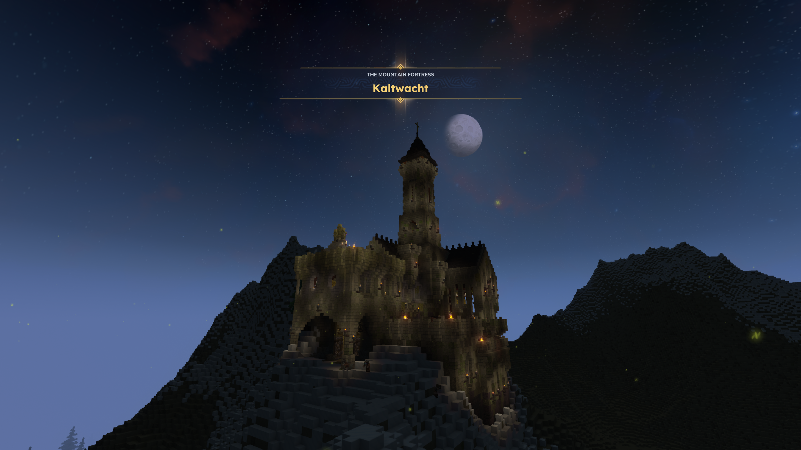
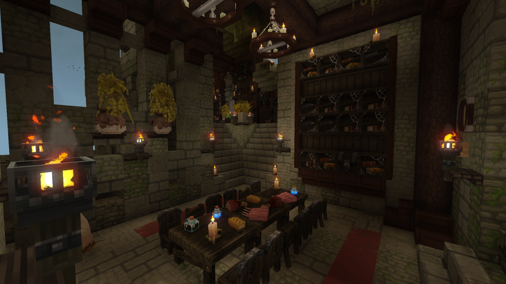
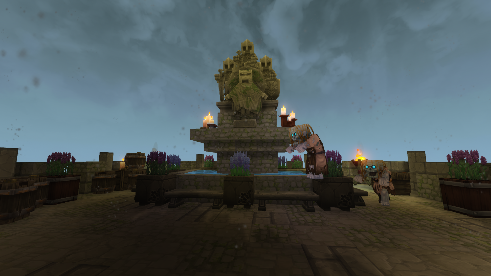
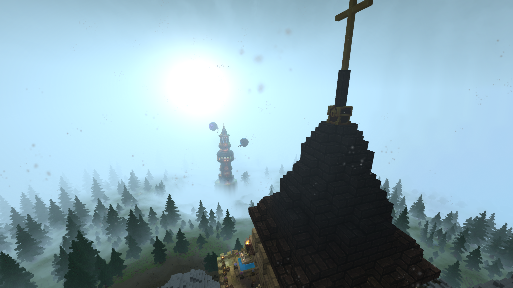
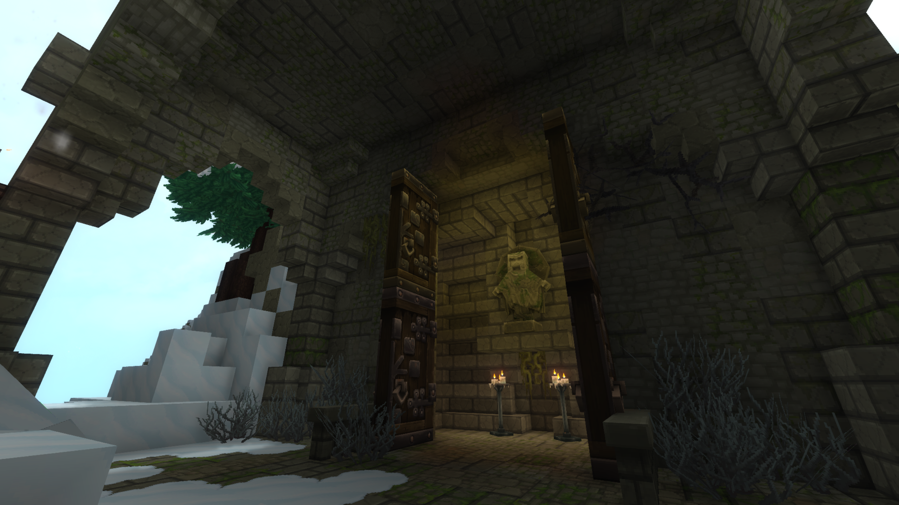

Perched precariously atop a jagged, snow-dusted peak, Kaltwacht stands as a formidable stone sentinel, a mountain fortress frozen in time, where ancient architecture and lingering horrors intertwine beneath the starry northern sky.
Kaltwacht

| Location Information | |
|---|---|
| Coordinates | X: 617, Z: 787 |
| Area Type | Rural Ruins |
| Mob Threat | Very High |
| Bandit Threat | High |
| Number of Chests | 19 |
| Water Source | Yes |
| Clean Water Source | No |
| Fireplace | No |
| Chef's Stove | No |
| Workbench | No |
| Available Loot | ||
|---|---|---|
| 🍎 Food | ✗ | |
| 🥛 Civilian | Tier 1 | ✗ | |
| ✂️ Civilian | Tier 2 | ✗ | |
| 🛠️ Civilian | Tier 3 | 4 | |
| 🛡️ Military | Tier 1 | ✗ | |
| ⚔️ Military | Tier 2 | 4 | |
| 🏹 Military | Tier 3 | 11 | |
| 🌟 Legendary | ✗ | |
Lore
Perched precariously atop a jagged, snow-dusted peak, Kaltwacht stands as a formidable stone sentinel—a mountain fortress frozen in time, where ancient architecture and lingering horrors intertwine beneath the starry northern sky.
The Cold Vigil
Rising high above a dense, misty pine forest, Kaltwacht was built to withstand both the brutal northern elements and the most relentless sieges. Its towering central spire, topped with a prominent golden cross, pierces the frigid air and serves as a beacon across the frosted valleys. From its highest battlements, lookouts can scan the horizon, where distant, isolated towers loom out of the rolling mountain fog under the pale glow of the moon.
The fortress is heavily fortified with thick stone arches and defensive stone steps carved directly into the mountain's frozen flanks. Yet, despite its imposing exterior, the true history of Kaltwacht is preserved within its moss-covered, shadow-drenched halls.
The Great Banquet Hall
Deep within the heart of the fortress lies the Great Banquet Hall, a chilling capsule of the stronghold's final days. Long wooden tables remain fully set with uneaten feasts of roasted meats, fresh bread, and strange, glowing blue elixirs—left behind as if the occupants vanished mid-meal. Massive iron chandeliers hang from heavy timber beams, casting a dim light over cobweb-covered bookcases packed with decaying records.
Every corner of the masonry is blanketed in creeping moss and vines, while iron braziers and scattered candles continue to burn, keeping a lonely, automated vigil over a hall that has long been devoid of living warmth.
Anatomy of the Peak Fortress
- The Spire Peak, a steep, dark-tiled roof crowned with a large golden cross overlooking the misty alpine wilderness.
- The Great Banquet Hall, a grand interior chamber frozen in time, containing preserved food, ancient texts, and overgrown stone arches.
- The Court of the Keepers, an open-air stone terrace featuring a majestic central fountain topped with a grand stone statue of ancient warriors.
- The Threshold of Guardians, a heavily reinforced wooden gatehouse adorned with stone carvings and lit by eternal candles.
The Court of the Dead
The peaceful silence of Kaltwacht's upper terrace is entirely deceptive. The open stone courtyard, beautifully decorated with planters of purple lavender and a central stone tier fountain, has become a playground for the restless dead. Glowing-eyed zombies, clad in tattered rags and old northern garb, mindlessly wander the battlements.
These corrupted guardians pace past the weathered stone statues of the fortress's old protectors, lashing out at any living trespasser who dares scale the mountain to claim the stronghold's secrets.
Present Day
For seasoned explorers, Kaltwacht is a high-altitude gauntlet rich in rewards. Navigating the fortress requires fighting through cramped interior stairwells and avoiding the lingering undead patrolling the open-air terraces. However, those who successfully purge the keep will find invaluable survival supplies, rare alchemical ingredients left intact on the banquet tables, and ancient texts hidden away in the cobwebbed libraries—making it one of the most prominent, atmospheric destinations in the frozen north.
Ascend the frozen steps of Kaltwacht with caution. The banquet fire still burns and the fountain still flows, but the only hosts waiting to greet you are the ones who refuse to rest.
Gallery



